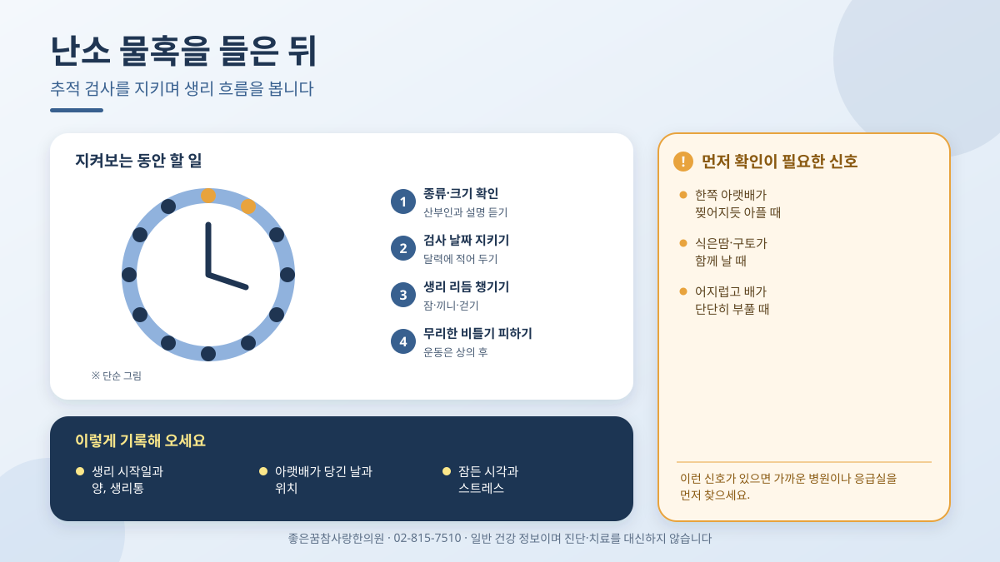

이종호 한의사 감수좋은꿈참사랑한의원 대표원장 (한의사 면허번호 19769)발행 2026-11-26 · 수정 2026-11-26
이 글의 차례
건강검진 결과지를 받아 든 저녁, '좌측 난소 낭종 3cm, 추적 관찰 요망'이라는 한 줄이 계속 눈에 밟힙니다. 검색창에 난소 물혹을 쳐 보면 수술 이야기, 혹이 터졌다는 이야기, 암과 구분해야 한다는 이야기가 한꺼번에 쏟아집니다. 다음 진료까지 석 달을 기다리라는데, 그동안 무엇을 해야 할지 막막해집니다.
진료실에서 이런 걱정을 자주 듣습니다. 물혹이라는 말 자체가 낯설고, 몸속에 무언가 자라고 있다는 느낌이 불안을 키웁니다. 아랫배가 조금만 당겨도 혹 때문인가 싶어 신경이 쓰이고, 잠자리에서도 자꾸 배에 손이 갑니다.
먼저 말씀드리고 싶은 것은, 난소 물혹은 생각보다 흔하고 그 가운데 상당수는 생리 주기를 따라 생겼다가 스스로 줄어드는 종류라는 점입니다. 산부인과에서 '지켜보자'고 했다면, 대개 지금 당장 무언가를 할 필요는 없다는 뜻입니다.
다만 물혹의 종류에 따라 살필 방향이 다르고, 추적 검사 일정을 지키는 일은 무척 중요합니다. 이 글에서는 물혹의 종류와 왜 생기는지, 지켜보는 동안 생활에서 할 수 있는 것, 그리고 한의원에서 함께 살필 수 있는 부분을 차근차근 정리해 보겠습니다.
난소 물혹은 어떤 것인가요?
난소 낭종은 난소 안이나 겉에 액체가 고인 주머니가 생긴 상태를 말합니다. 흔히 물혹이라고 부르는데, 주머니 안에 무엇이 들어 있는지, 어떻게 생겼는지에 따라 이름이 달라집니다.
가장 흔한 것은 기능성 낭종입니다. 난소는 매달 배란을 준비하며 난포라는 작은 주머니를 키우는데, 이 주머니가 터지지 않고 남거나 배란 뒤 생긴 황체에 액체가 고이면 물혹처럼 보입니다. 이런 물혹은 한두 번의 생리 주기 안에 저절로 작아지거나 사라지는 경우가 많습니다.
자궁내막종은 자궁내막증과 이어진 물혹입니다. 자궁 안쪽 조직이 난소에 자리 잡아 생리 때마다 피가 고이면서 생기며, 안의 내용물이 초콜릿처럼 짙어 초콜릿 낭종이라고도 부릅니다. 생리통이 심하고 해마다 심해지는 분에게서 발견되는 경우가 많습니다.
이 밖에 피부나 머리카락 같은 조직이 들어 있는 기형종, 맑은 액체나 끈적한 액체가 차는 장액성·점액성 낭종 등이 있습니다. 대부분 양성이지만, 크기와 모양, 혈액 검사 결과에 따라 수술을 권하기도 합니다.
왜 난소에 물혹이 생길까요
기능성 낭종은 배란 과정의 작은 어긋남에서 생깁니다. 호르몬 신호가 흔들려 난포가 제때 터지지 않거나, 배란 뒤 황체가 평소보다 오래 남으면 물혹이 됩니다. 잠이 부족하거나 스트레스가 큰 시기, 체중이 크게 변한 시기에 생리 주기와 함께 배란도 흔들릴 수 있습니다.
배란을 돕는 약을 쓰는 난임 치료 중에도 기능성 낭종이 생기기 쉽습니다. 여러 개의 난포를 한꺼번에 키우는 과정에서 일부가 물혹으로 남기 때문입니다.
자궁내막종은 생리혈 일부가 나팔관을 거쳐 골반 안으로 거꾸로 흐르는 일, 면역과 호르몬의 영향 등이 함께 얽혀 생긴다고 봅니다. 가족 가운데 자궁내막증이 있는 분이 있으면 조금 더 흔합니다.
한의학에서는 아랫배가 차고 생리혈에 덩어리가 많으며 생리통이 심한 흐름, 몸에 열이 많고 생리 전 예민함이 큰 흐름처럼 사람마다 바탕을 나눠 봅니다. 물혹의 크기를 직접 바꾸는 것보다, 배란과 생리가 흔들리는 바탕을 함께 살피는 쪽에 무게를 둡니다.
물혹이 있을 때 흔히 나타나는 불편
작은 물혹은 대부분 아무 느낌이 없어서 검진 때 우연히 발견됩니다. 크기가 커지면 아랫배 한쪽이 묵직하거나 당기는 느낌, 배가 더부룩하고 소변이 자주 마려운 느낌이 들 수 있습니다.
자궁내막종이 있으면 생리통이 심하고, 관계 때 깊은 곳이 아프거나, 생리 전후로 허리와 엉덩이까지 뻐근한 경우가 있습니다. 배란기 무렵 한쪽 아랫배가 콕콕 찌르는 느낌은 기능성 낭종이나 배란통과 겹쳐 나타나기도 합니다.
이런 불편이 물혹 때문인지, 장이나 방광, 근육 때문인지는 느낌만으로 나누기 어렵습니다. 그래서 불편이 생긴 날짜와 생리 주기를 함께 기록해 두면 산부인과와 한의원 양쪽에서 판단하는 데 도움이 됩니다.
지켜보자는 말은 이런 뜻입니다
산부인과에서 "석 달 뒤 다시 보자"고 하는 경우, 대개 기능성 낭종일 가능성이 높아 생리 주기를 몇 번 지나며 크기가 줄어드는지 확인하려는 뜻입니다. 이 기간에 물혹이 작아지거나 사라지면 따로 치료가 필요하지 않은 경우가 많습니다.
크기가 그대로이거나 커지는 경우, 모양이 복잡하거나 혈액 검사 수치가 신경 쓰이는 경우에는 추가 검사나 수술을 상의하게 됩니다. 그러니 지켜보는 동안 가장 중요한 일은 다음 검사 날짜를 놓치지 않는 것입니다.
한의원 진료를 함께 받으시더라도 산부인과 추적 검사는 그대로 이어 가셔야 합니다. 한의원에서 물혹의 크기를 재거나 수술 여부를 판단하지는 않습니다.
비슷한 상태와 이렇게 나눠 봅니다
다낭성 난소 증후군은 이름이 비슷해 자주 헷갈리지만 물혹과는 다른 상태입니다. 난소 가장자리에 작은 난포가 여러 개 줄지어 보이고, 배란이 잘 되지 않아 생리 주기가 길어지거나 불규칙한 것이 특징입니다. 하나의 주머니가 커지는 물혹과는 살피는 방향이 다릅니다.
자궁근종은 자궁 벽에 생기는 근육 혹이고, 난소 물혹은 자궁 옆 난소에 생기는 주머니입니다. 둘 다 아랫배가 묵직하거나 생리 양이 달라질 수 있어 비슷하게 느껴지지만, 위치와 성질이 달라 따로 확인합니다.
오른쪽 아랫배 통증은 맹장염, 아랫배 전체의 불편은 장이나 방광 문제와도 겹칠 수 있습니다. 통증과 함께 열, 설사, 소변 이상이 있는지에 따라 내과나 비뇨의학과 확인이 먼저 필요할 수도 있습니다.
진료실에서 자주 듣는 걱정
"혹시 암이 아닐까요"라는 걱정을 가장 많이 듣습니다. 난소 물혹의 대부분은 양성이고, 산부인과에서 초음파 모양과 필요하면 혈액 검사로 그 가능성을 함께 살핍니다. 불안이 크다면 다음 진료 때 어떤 점 때문에 지켜보기로 했는지 직접 여쭤보시면 마음이 한결 놓입니다.
"물혹이 터지면 어떡하나요"라는 걱정도 많습니다. 드물게 물혹이 터지거나 난소가 꼬이는 일이 있는데, 이때는 갑자기 심한 통증이 생겨 대개 알아차릴 수 있습니다. 아래 '먼저 확인이 필요한' 신호를 알아 두시면 막연한 두려움이 조금 줄어듭니다.
스스로 점검해 보세요
다음 질문을 떠올려 보시면 진료실에서 이야기를 나누기가 쉬워집니다.
- 산부인과에서 들은 물혹의 종류와 크기는 무엇인가요?
- 다음 검사 날짜는 언제인가요?
- 생리 주기와 생리 기간, 생리 양은 어떤가요?
- 생리통이 해마다 심해지고 있나요?
- 아랫배 한쪽이 당기거나 묵직한 날이 있나요?
- 관계 때 깊은 곳이 아픈 적이 있나요?
- 임신을 준비 중이신가요?
먼저 이렇게 여쭙니다
처음 오시면 저는 대략 이런 순서로 여쭙니다.
- 물혹은 언제, 어떤 검사에서 발견되었나요?
- 산부인과에서는 어떤 설명과 계획을 들으셨나요?
- 생리 주기, 생리통, 덩어리, 생리 전 증상은 어떠신가요?
- 피임약이나 호르몬 약, 난임 치료 약을 쓰고 계신가요?
- 잠드는 시각과 잠의 질은 어떠신가요?
- 소화와 대변, 손발과 아랫배의 온도는 어떠신가요?
임신을 준비 중이시거나 임신 가능성이 있다면 가장 먼저 알려 주세요. 침과 한약을 정할 때 고려할 것이 달라지고, 필요하면 산부인과와 먼저 상의하시도록 안내합니다.
일상에서 먼저 해 볼 수 있는 것
배란과 생리 주기를 흔드는 생활 요인을 먼저 줄여 보세요. 잠드는 시각을 일정하게 하고, 끼니를 거르지 않으며, 짧게라도 매일 걷는 것이 기본입니다. 급하게 체중을 줄이거나 늘리는 일은 피하시는 편이 좋습니다.
아랫배가 차게 느껴지는 분은 허리와 배를 덮는 옷을 입고, 찬 음료를 줄여 보세요. 다만 물혹이 있는 자리에 뜨거운 찜질을 오래 대는 것은 피부를 상하게 할 수 있으니, 미지근하게 따뜻한 정도로만 짧게 하세요.
갑자기 몸을 비틀거나 배에 강한 힘이 들어가는 운동은 크기가 큰 물혹이 있을 때 조심하는 것이 좋습니다. 어떤 운동이 괜찮은지는 물혹의 크기와 종류에 따라 다르니 산부인과에 여쭤보세요.
걱정이 클 때는 정보를 찾는 시간을 정해 두는 것도 도움이 됩니다. 밤늦게 검색을 이어 가면 불안이 커지고 잠이 얕아집니다. 궁금한 것은 메모해 두었다가 다음 진료 때 한꺼번에 여쭤보세요.
변비가 있으면 배에 힘을 주는 일이 잦아지고 아랫배의 묵직함도 더 크게 느껴집니다. 채소와 물을 조금씩 늘리고, 아침 식사 뒤 화장실에 앉는 시간을 정해 두면 배 속이 한결 가벼워집니다. 카페인과 술은 생리 전후 불편을 키울 수 있어 이 시기에는 양을 줄여 보시길 권합니다.
생리통이 있을 때 진통제는 산부인과나 약국에서 안내받은 대로 드셔도 괜찮습니다. 다만 평소보다 훨씬 많은 양이 필요해졌다면 기록해 두었다가 다음 진료 때 꼭 알려 주세요.
한의원에서 함께 살필 수 있는 경우
- 산부인과에서 지켜보자고 했는데 생리 흐름과 몸 상태를 함께 살피고 싶은 경우
- 생리통이 심하고 아랫배와 손발이 찬 경우
- 생리 주기가 들쭉날쭉하고 잠과 긴장이 흔들리는 경우
- 수술을 마친 뒤 몸의 회복과 생리 흐름을 함께 살피고 싶은 경우
- 임신을 준비하며 생활 리듬과 몸의 바탕을 정리하고 싶은 경우
좋은꿈참사랑한의원에 오시면 먼저 아래 '먼저 확인이 필요한' 신호가 없는지부터 봅니다. 그다음 맥을 짚고 아랫배와 허리를 살피며, 생리 흐름과 잠, 소화를 함께 여쭙습니다.
진찰한 내용을 바탕으로 생활에서 바꿔 볼 것 하나와 함께 침, 온열 관리, 한약 상담 가운데 지금 상태에 맞는 것을 정합니다. 한약을 상의할 때는 드시는 약을 모두 확인하고 신중하게 정합니다. 산부인과에서 처방받은 호르몬 약이나 다른 약은 처방한 선생님과 상의 없이 멈추지 않습니다.
수술을 받은 뒤라면
물혹 제거 수술을 받은 뒤에는 상처가 아무는 동안 무리한 움직임을 피하고, 산부인과에서 안내한 회복 일정을 따르는 것이 먼저입니다. 배 안에 넣었던 가스 때문에 어깨가 뻐근하거나, 아랫배가 한동안 당기는 느낌이 남기도 합니다.
회복기에 기운이 떨어지고 잠이 얕아지며, 생리 주기가 한두 번 흔들리는 분도 계십니다. 자궁내막종 수술 뒤에는 재발을 줄이기 위해 호르몬 약을 이어 가는 경우가 많으니, 이 약은 처방한 선생님과 상의 없이 멈추지 마세요. 한의원에서는 이 시기의 피로와 잠, 소화, 생리 흐름을 함께 살펴볼 수 있습니다.
이렇게 기록해 오시면 상담이 쉬워집니다
다음 검사까지 두세 달 동안 아래 내용을 적어 보세요. 산부인과 진료 때도 함께 보여 드리면 좋습니다.
- 생리 시작일과 끝난 날, 생리 양과 덩어리
- 생리통의 세기(0~10)와 진통제 복용
- 아랫배가 당기거나 묵직했던 날과 위치(오른쪽, 왼쪽)
- 배란기 무렵의 통증이나 피 비침
- 잠든 시각과 깬 횟수
- 스트레스가 컸던 날
기록을 나란히 놓고 보면 불편이 생리 주기의 어느 때에 몰리는지 보이기 시작합니다.
불안과 함께 지내는 법
물혹이 있다는 말을 들으면 몸이 시한폭탄처럼 느껴지기도 합니다. 하지만 대부분의 물혹은 정해진 간격으로 확인하면서 차분히 지켜볼 수 있는 상태입니다. 다음 검사 날짜를 달력에 적어 두고, 그때까지는 잠과 끼니, 움직임을 챙기는 데 마음을 쓰시길 권합니다.
이번 달에는 생리 기록 하나, 잠드는 시각 지키기 하나만 정해 보세요. 다음에 오시면 산부인과 결과지와 그 기록을 나란히 펼쳐 보겠습니다.
이런 증상은 먼저 확인이 필요합니다
- 갑자기 한쪽 아랫배가 찢어지듯 심하게 아프고 식은땀이나 구토가 나는 경우
- 아랫배 통증과 함께 어지럽고 쓰러질 것 같거나 배가 단단하게 부풀어 오르는 경우
이런 신호가 있으면 한의원보다 가까운 병원이나 응급실을 먼저 찾으세요.
함께 읽으면 좋은 글
- 자궁내막증이 있다고 들었을 때, 생리통과 골반 통증은 어떻게 함께 살피나요?
- 다낭성 난소 증후군이 있을 때 생활과 생리 주기는 어떻게 살피나요?
- 배란통과 배란기 출혈, 생리 사이 아랫배 통증과 피 비침은 어떻게 살피나요?
- 자궁근종이나 자궁선근증이 있다고 들었을 때 한의원에서는 무엇을 함께 살피나요?
- 생리통이 심할 때 한의원에서는 무엇을 먼저 묻고, 언제 병원 검사가 필요한가요?

여쭙는 것
- 물혹은 언제, 어떤 검사에서 발견되었나요?
- 산부인과에서는 어떤 설명과 계획을 들으셨나요?
- 생리 주기, 생리통, 덩어리, 생리 전 증상은 어떠신가요?
생활에서 해 볼 것
- 배란과 생리 주기를 흔드는 생활 요인을 먼저 줄여 보세요.
- 잠드는 시각을 일정하게 하고, 끼니를 거르지 않으며, 짧게라도 매일 걷는 것이 기본…
- 급하게 체중을 줄이거나 늘리는 일은 피하시는 편이 좋습니다.
한의원에서 함께 살필 것
- 산부인과에서 지켜보자고 했는데 생리 흐름과 몸 상태를 함께 살피고 싶은 경우
- 생리통이 심하고 아랫배와 손발이 찬 경우
- 생리 주기가 들쭉날쭉하고 잠과 긴장이 흔들리는 경우
먼저 확인이 필요한 신호
- 갑자기 한쪽 아랫배가 찢어지듯 심하게 아프고 식은땀이나 구토가 나는 경우
- 아랫배 통증과 함께 어지럽고 쓰러질 것 같거나 배가 단단하게 부풀어 오르는 경우
한눈에 보는 표
| 구분 | 핵심 |
|---|---|
| 여쭙는 것 | 물혹은 언제, 어떤 검사에서 발견되었나요? 산부인과에서는 어떤 설명과 계획을 들으셨나요? |
| 한의원에서 함께 살필 것 | 산부인과에서 지켜보자고 했는데 생리 흐름과 몸 상태를 함께 살피고 싶은 경우 생리통이 심하고 아랫배와 손발이 찬 경우 |
| 먼저 확인이 필요한 신호 | 갑자기 한쪽 아랫배가 찢어지듯 심하게 아프고 식은땀이나 구토가 나는 경우 아랫배 통증과 함께 어지럽고 쓰러질 것 같거나 배가 단단하게 부풀어 오르는 경우 |
자주 묻는 질문
물혹이 있으면 꼭 수술해야 하나요?
기능성 낭종처럼 저절로 작아지는 경우가 많아, 크기와 모양에 따라 지켜보는 경우가 흔합니다. 수술 여부는 물혹의 종류와 크기, 증상, 검사 결과를 보고 산부인과에서 판단합니다.
한약을 먹으면 물혹이 작아지나요?
한의원에서 물혹의 크기를 직접 줄인다고 말씀드리기는 어렵습니다. 생리와 배란이 흔들리는 몸의 바탕을 살피는 데 무게를 두고, 크기 변화는 산부인과 추적 검사로 확인합니다.
물혹이 있어도 임신을 준비할 수 있나요?
물혹의 종류와 크기에 따라 다르니 산부인과에서 먼저 상의해 보세요. 자궁내막종처럼 임신 준비에 영향을 줄 수 있는 경우가 있어, 계획을 미리 말씀드리는 것이 좋습니다.
운동은 해도 되나요?
걷기처럼 가벼운 운동은 대부분 괜찮습니다. 크기가 큰 물혹이 있다면 몸을 세게 비틀거나 배에 강한 충격이 가는 운동은 산부인과와 상의한 뒤 정하세요.
다음 검사 전에 한의원 진료를 받아도 되나요?
네, 함께 받으실 수 있습니다. 다만 산부인과 추적 검사 일정은 그대로 지켜 주시고, 결과가 나오면 한의원에도 알려 주세요.
좋은꿈참사랑한의원은 재진 때 지난번 이야기부터 이어서 여쭙니다. 진료시간과 예약은 오시는 길에서 확인하세요.
어디서 상담받을 수 있나요?
좋은꿈참사랑한의원은 서울 동작구 만양로2길 2 신성빌딩 3층·5층(서울 동작구 상도동, 7호선 상도역 3번 출구 근처)에 있습니다. 한의사 3명(이종호 대표원장, 조영기 수석진료원장, 정원영 진료원장)이 진료합니다. 진료시간은 평일 09:30~20:00(점심 13:00~14:00), 토·일·공휴일 09:30~15:00이며, 방문 전 전화로 확인을 권합니다. 예약은 네이버 예약, 카카오톡 상담, 전화 02-815-7510로 받습니다.
이 글은 일반적인 건강 정보이며 개인의 진단이나 치료를 대신하지 않습니다. 증상이 있거나 복용 중인 약이 있다면 진료를 통해 확인하세요. 치료 효과는 개인마다 다를 수 있습니다.
작성 기준: 일반적으로 알려져 있는 건강 정보를 참고해 정리했습니다(대표원장 감수). 증상 기록은 1~2주 동안 하루 1회, 비슷한 시간에 적어 오시면 지난 상태와 비교하기 쉽습니다.